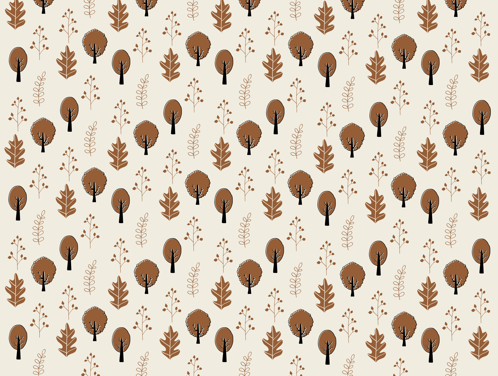
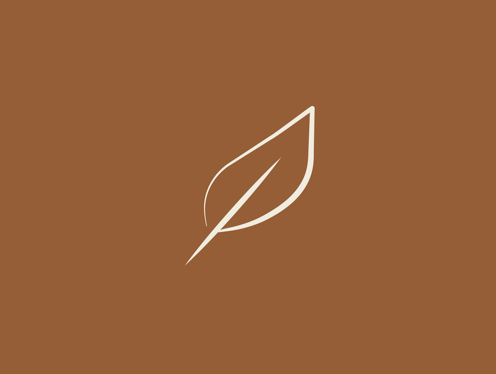
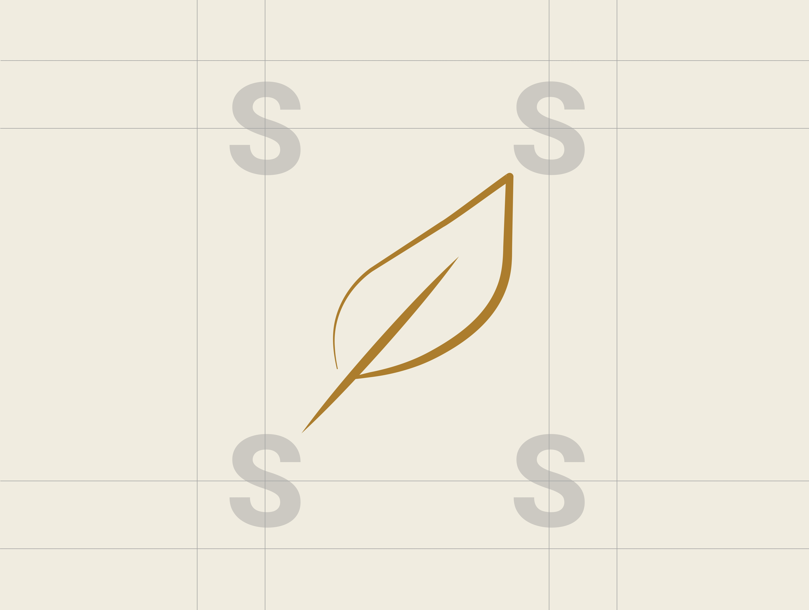
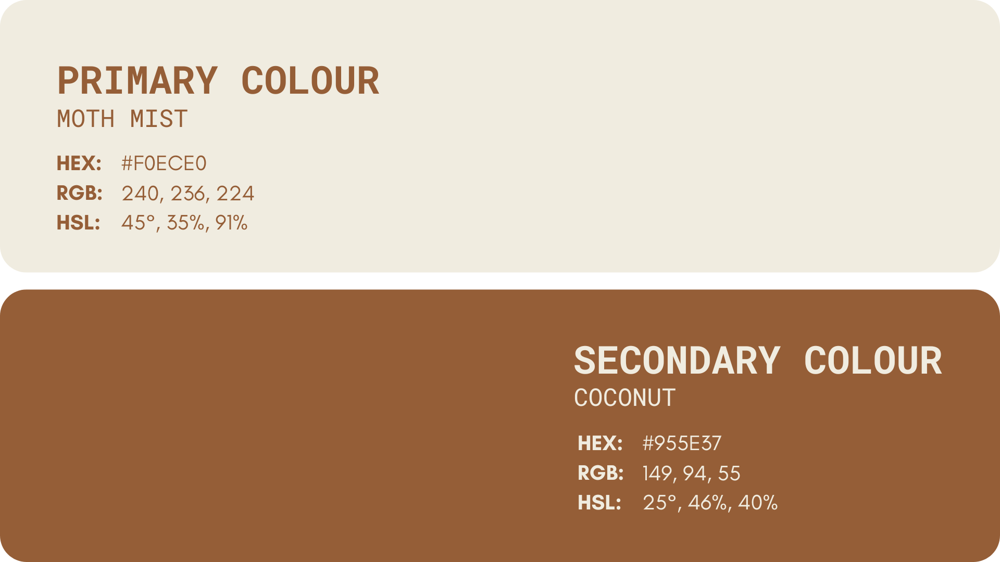
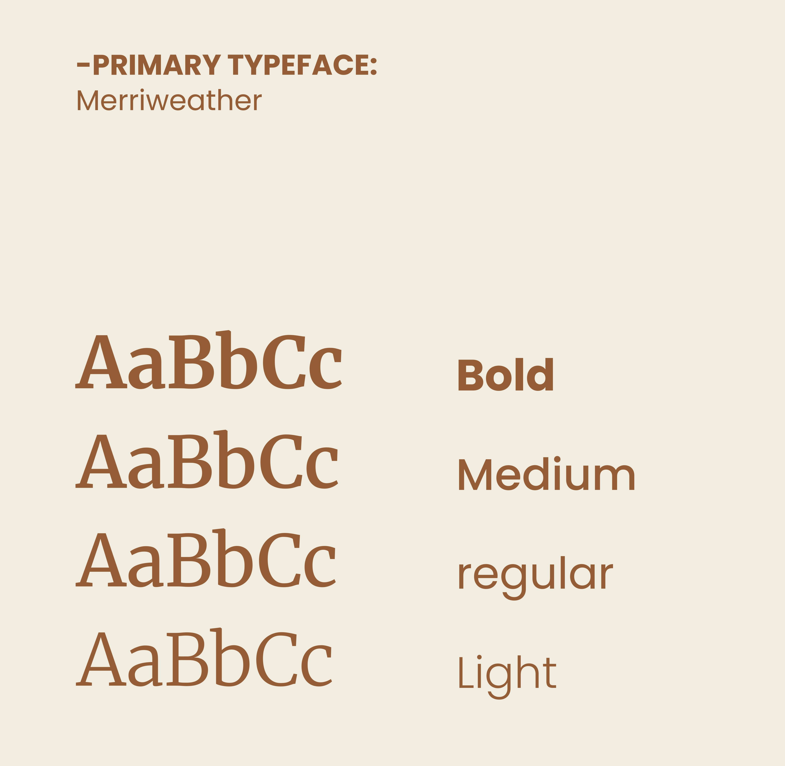
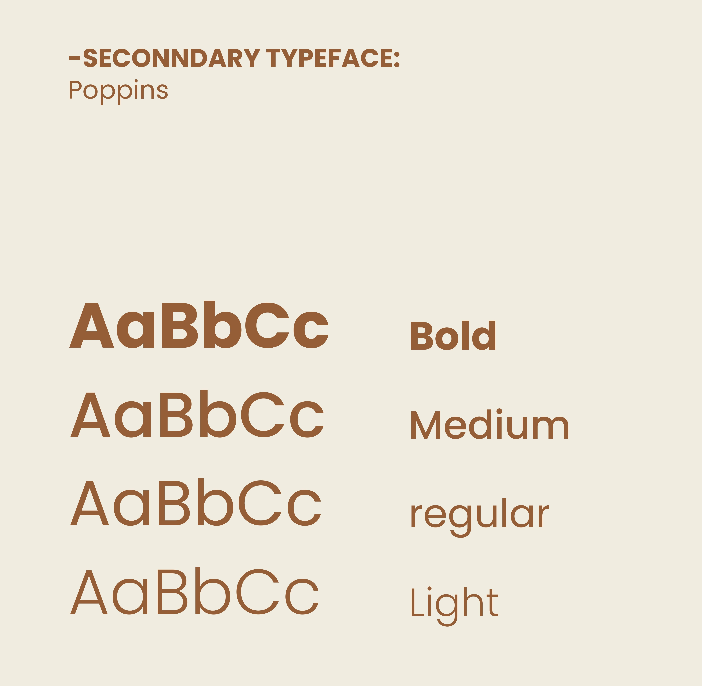
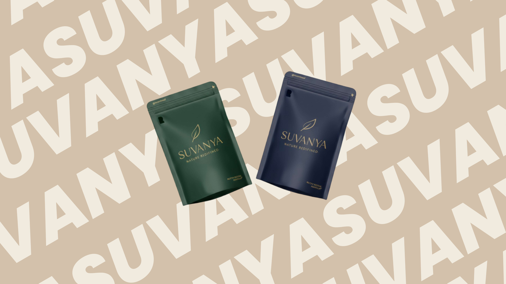

PROJECT SUMMARY
Suvanya is dedicated to providing natural, wholesome food products — jaggery, turmeric, and organic staples — that promote genuine health and well-being. Their focus is on delivering authentic, high-quality organic foods that people can trust, helping them make healthier choices every day.
Through the brand identity, the goal was to create a visual language that feels natural, modern, and approachable — making it easy for consumers to connect with the brand and embrace a healthier lifestyle.
Suvanya
2025
Logo Design, Brand Identity
The organic food space is saturated with brands that all look the same — earthy browns, leaf icons, generic serif fonts. Suvanya needed an identity that communicated trust and naturalness without looking like every other health food brand on the shelf.
The visual system was built around warmth and clarity. A grounded colour palette drawn from turmeric and raw jaggery tones, paired with clean modern typography to signal that this is a brand confident in its quality — not hiding behind rustic aesthetics.
Delivered a full brand identity including logo suite, colour palette, typography system, and digital templates. The visual language works consistently across product packaging, social media, and marketing collateral.






